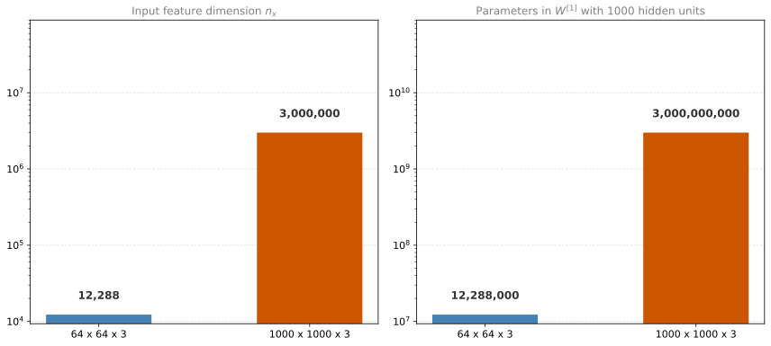
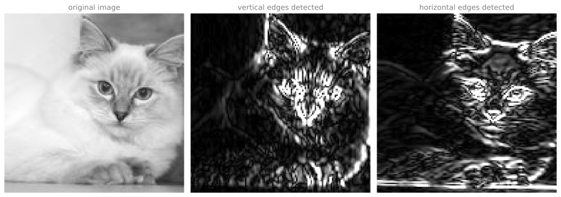
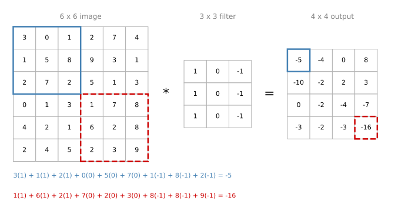
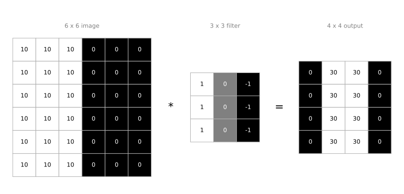
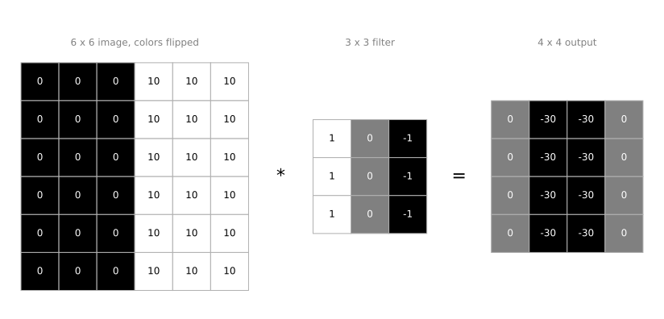
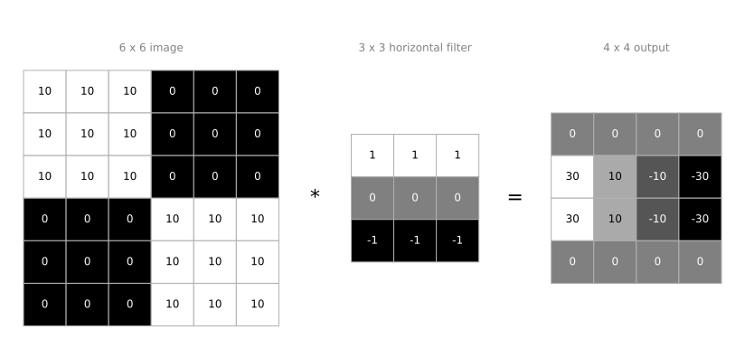
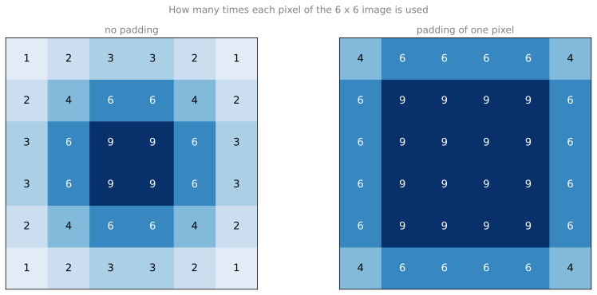
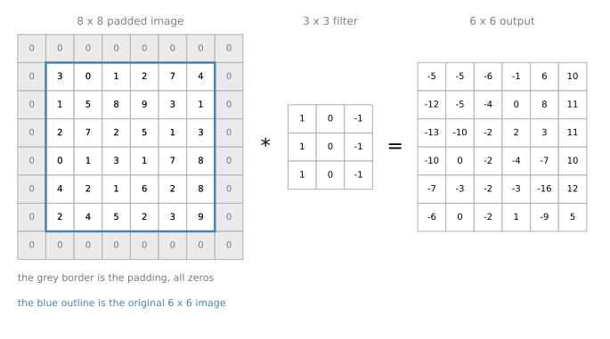

Convolutions and Edge Detection
deep-learning
convolutional-neural-networks
computer-vision
edge-detection
padding
Why large images break fully connected networks, how the convolution operation detects vertical and horizontal edges, and how padding preserves image size.
Computer vision is one of the areas that has been advancing rapidly thanks to deep learning. Deep learning computer vision is now helping self-driving cars figure out where the other cars and pedestrians around them are, so as to avoid them. It is making face recognition work much better than ever before, so that you may already be able to unlock a phone, or even unlock a door, using just your face. And if you look at your cell phone, there are probably many apps that show you pictures of food, or pictures of a hotel, or just fun pictures of scenery. Some of the companies that build those apps use deep learning to show you the most attractive, the most beautiful, or the most relevant pictures. Deep learning is even enabling new types of art to be created.
There are two reasons to be excited about deep learning for computer vision. First, rapid advances in computer vision are enabling brand new applications that were impossible a few years ago, and by learning these tools you may be able to invent some of those new products yourself. Second, even if you do not end up building computer vision systems, the computer vision research community has been so creative and so inventive in coming up with new neural network architectures and algorithms that a lot of cross-fertilization happens into other areas as well. Ideas from computer vision have been borrowed into the speech recognition literature, for example. So even if you do not end up working on computer vision, some of the ideas here may be useful for your own algorithms and architectures.
Computer Vision Problems
Here are some examples of computer vision problems covered in this course.
Image classification, sometimes also called image recognition. You take as input a 64 by 64 image, say, and try to figure out whether it is a cat. This is the problem the cat classifier solved.
Object detection. If you are building a self-driving car, maybe you do not just need to figure out that there are other cars in the image. Instead you need to figure out the position of the other cars in the picture, so that your car can avoid them. In object detection, you usually have to not just figure out that these other objects are cars, but also draw boxes around them, or find some other way of recognizing where in the picture those objects are. Notice also that there can be multiple cars in the same picture, or at least several of them within a certain distance of your car.
Neural style transfer. Say you have a picture and you want it repainted in a different style. In neural style transfer you have a content image and you have a style image. A neural network puts them together and repaints the content image in the style of the style image. Algorithms like these are enabling new types of artwork to be created, and you will learn how to do this yourself in this course.
Deep Learning on Large Images
One of the challenges of computer vision problems is that the inputs can get really big. In previous courses you worked with 64 by 64 images. That is 64 by 64 by 3, because there are three color channels, and if you multiply that out you get 12,288. So the input \(x\) has dimension \(n_x = 12{,}288\). That is not too bad.
But 64 by 64 is actually a very small image. If you work with larger images, maybe a 1000 pixel by 1000 pixel image, which is just one megapixel, then the dimension of the input features will be 1000 by 1000 by 3, because you have three RGB channels, and that is three million. So \(x\) is now three million dimensional.
Suppose the first hidden layer has just 1000 hidden units, and you use a standard fully connected network like the ones in Courses 1 and 2. The weight matrix \(W^{[1]}\) would then have shape \(1000 \times 3{,}000{,}000\), which means it has three billion parameters.
Both axes are on a logarithmic scale, so each step up the axis is a factor of ten. Going from a small image to a one megapixel image multiplies the input dimension by about 244, and it multiplies the size of the very first weight matrix by the same factor.
With three billion parameters, it is difficult to get enough data to prevent the neural network from overfitting. The computational requirements and the memory requirements to train a network that size are also infeasible. But for computer vision applications you do not want to be stuck using only tiny little images. You want to use large images.
To do that, you need the convolution operation, which is one of the fundamental building blocks of convolutional neural networks.
Review Questions
1. A 1000 by 1000 RGB image is fed into a fully connected layer with 1000 hidden units. How many parameters does the first weight matrix hold, and why is that a problem?
TipAnswer
The input dimension is \(1000 \times 1000 \times 3 = 3{,}000{,}000\), so \(W^{[1]}\) is \(1000 \times 3{,}000{,}000\), which is three billion parameters. With that many parameters it is difficult to collect enough data to keep the network from overfitting, and the computation and memory needed to train it are infeasible.
1. Why does the input dimension get multiplied by three for a color image?
TipAnswer
Because a color image has three color channels, red, green, and blue. Each pixel contributes three numbers rather than one, so a 64 by 64 color image has \(64 \times 64 \times 3 = 12{,}288\) input features rather than 4,096.
Convolution Operation
Earlier you saw that the early layers of a neural network might detect edges, some later layers might detect parts of objects, and even later layers may detect complete objects such as people’s faces. So a good place to start is with detecting edges in an image.
Given a picture, for a computer to figure out what the objects in it are, the first thing you might do is detect vertical edges in the image. A photograph of a street has vertical lines where the buildings are, as well as vertical lines along the pedestrians, and those get picked out by a vertical edge detector. You might also want to detect horizontal edges. A railing running across the scene is a very strong horizontal line, and that gets detected too.

The whiskers, the vertical edges of the ears, and the sides of the face show up in the middle panel. The horizontal line of the eyes, the mouth, and the shadow under the chin show up in the right panel. The rest of this section explains how those two pictures were produced.
Convolving a Filter Over an Image
Here is a 6 by 6 grayscale image. Because it is grayscale, it is just a 6 by 6 by 1 matrix rather than 6 by 6 by 3, since there are no separate RGB channels.
In order to detect vertical edges in this image, you construct a 3 by 3 matrix. In the terminology of convolutional neural networks this is called a filter. The filter is
\[ \begin{bmatrix} 1 & 0 & -1 \\ 1 & 0 & -1 \\ 1 & 0 & -1 \end{bmatrix} \]
Some research papers call this a kernel instead of a filter. This page uses the word filter throughout.
What you do is take the 6 by 6 image and convolve it with the 3 by 3 filter. The convolution operation is denoted by an asterisk, \(*\). The output of this operation is a 4 by 4 matrix, which you can think of as a 4 by 4 image.
The way you compute the 4 by 4 output is as follows. To compute the first element, the upper left element of the 4 by 4 matrix, you take the 3 by 3 filter and paste it on top of the upper left 3 by 3 region of the input image. Then you take the element-wise product of the two, and add up all nine resulting numbers.

Going down the first column gives \(3 \times 1\), then \(1 \times 1\), then \(2 \times 1\). The middle column gives \(0 \times 0\), \(5 \times 0\), and \(7 \times 0\). The rightmost column gives \(1 \times (-1)\), \(8 \times (-1)\), and \(2 \times (-1)\). Adding up these nine numbers gives \(-5\), which is the first entry of the output. You can add the nine numbers in any order, of course.
To figure out the second element, you shift the blue square one step to the right and do the same element-wise product and addition, which gives \(-4\). Shift right again and you get \(0\), and once more gives \(8\). That last one is worth checking, because the left column contributes \(2 + 9 + 5 = 16\), the middle column contributes zero, and the right column contributes \(4 + 1 + 3 = 8\) with a minus sign, so \(16 - 8 = 8\).
To get the first element of the next row you take the square and shift it one step down, then repeat the products and the addition, which gives \(-10\). Shifting right along that row gives \(-2\), then \(2\), then \(3\). Fill in the rest of the matrix the same way. The \(-16\) in the bottom right corner comes from the lower right 3 by 3 region, shown with the dashed red outline.
So a 6 by 6 matrix convolved with a 3 by 3 matrix gives you a 4 by 4 matrix. These images and filters are really just matrices of various dimensions. The matrix on the left is convenient to interpret as an image, the one in the middle is interpreted as a filter, and the one on the right can be interpreted as another image.
NoteAsterisk Is Overloaded Notation
One slightly unfortunate thing about the notation is that in mathematics the asterisk is the standard symbol for convolution, but in Python the asterisk denotes multiplication, or element-wise multiplication. This page always means convolution when it writes \(*\) between an image and a filter.
In practice, most programming languages have a named function rather than an asterisk for this operation. The programming exercises in this course use a function called conv_forward. In TensorFlow there is tf.nn.conv2d, and in Keras there is a Conv2D layer that implements convolution. Every deep learning framework with good support for computer vision has some function for the convolution operator.
Review Questions
1. You convolve a 6 by 6 image with a 3 by 3 filter. What are the dimensions of the output, and why?
TipAnswer
The output is 4 by 4. The filter has to sit entirely inside the image, and there are only four horizontal positions and four vertical positions where a 3 by 3 square fits inside a 6 by 6 square.
1. What arithmetic produces a single entry of the output matrix?
TipAnswer
You paste the filter on top of the matching 3 by 3 region of the image, multiply each filter entry by the image value underneath it, and add up all nine products. That single number becomes one entry of the output. Sliding the filter to every valid position fills in the whole output matrix.
1. What is the difference between a filter and a kernel?
TipAnswer
There is no difference. They are two names for the same 3 by 3 matrix of numbers. Some research papers say kernel, and the course says filter.
Why This Detects Vertical Edges
To see why that filter is a vertical edge detector, use a simplified image. Here is a 6 by 6 image where the left half of the image is 10 and the right half is 0. Plotted as a picture, the 10s give brighter pixel intensity values and the 0s give darker pixel intensity values. In this image there is clearly a very strong vertical edge right down the middle, where it transitions from white to a darker color.
The filter itself can be visualized the same way, with brighter pixels on the left, a mid tone of zeros in the middle, and darker pixels on the right.

Check the arithmetic. The zero in the first output column comes from a window whose left column contributes \(10 + 10 + 10\), whose middle column contributes zeros, and whose right column contributes \(-10 - 10 - 10\), which cancels out to zero. The 30 next to it comes from a window whose left column still contributes \(10 + 10 + 10\) but whose right column now sits over the dark half and contributes nothing, which is why you end up with 30.
Plotted as an image, the output has a lighter region right in the middle, and that corresponds to having detected the vertical edge down the middle of the 6 by 6 image.
In case the dimensions seem a little bit wrong, in that the detected edge looks really thick, that is only because this example uses very small images. If you use a 1000 by 1000 image rather than a 6 by 6 image, the same filter does a pretty good job of picking out the vertical edges, as the cat photograph earlier showed. Here the bright region in the middle is just the output image saying that there appears to be a strong vertical edge right down the middle.
One intuition to take away is that a vertical edge is a 3 by 3 region, since the filter is 3 by 3, where there are bright pixels on the left, dark pixels on the right, and it does not matter much what is in the middle. The convolution operation gives you a convenient way to specify how to find these vertical edges in an image.
Review Questions
1. In the simplified example, why are the first and last columns of the output zero while the two middle columns are 30?
TipAnswer
For the outer positions, the filter sits entirely over one uniform half of the image. The left column of the window and the right column of the window contribute equal amounts with opposite signs, so they cancel and the result is zero. For the two middle positions, the left column of the window sits on the bright half and contributes \(10 + 10 + 10 = 30\), while the right column sits on the dark half and contributes nothing, so the result is 30.
1. The detected edge in the output looks two columns thick, which seems too wide. Is the filter working incorrectly?
TipAnswer
No. It is an artifact of using a 6 by 6 image, where a 4 by 4 output has nowhere to put a thin line. On a large image, say 1000 by 1000, the same filter marks the edge as a thin bright band relative to the size of the picture.
Positive and Negative Edges
There is a difference between positive and negative edges, that is, between light to dark and dark to light transitions.
Take the same example and flip the colors, so that it is darker on the left and brighter on the right. The 10s are now on the right half of the image and the 0s are on the left. Convolving with the same edge detection filter gives \(-30\) down the middle instead of \(30\).

Because the shade of the transition is reversed, the sign of the output gets reversed as well. The negative 30s show that this is a dark to light transition rather than a light to dark transition. If you do not care which of the two cases it is, you can take the absolute value of the output matrix, which is what the cat photograph earlier did. But this particular filter does distinguish between light to dark and dark to light edges.
Horizontal Edge Detection
The 3 by 3 filter above detects vertical edges, so it should not surprise you too much that the filter
\[ \begin{bmatrix} 1 & 1 & 1 \\ 0 & 0 & 0 \\ -1 & -1 & -1 \end{bmatrix} \]
detects horizontal edges. As a reminder, a vertical edge according to the first filter is a 3 by 3 region where the pixels are relatively bright on the left part and relatively dark on the right part. Similarly, a horizontal edge is a 3 by 3 region where the pixels are relatively bright on the top row and relatively dark in the bottom row.
Here is a more complex example, with 10s in the upper left and lower right hand corners. Drawn as an image, it is darker where the 0s are and lighter in the upper left and lower right hand corners.

Take a couple of examples from the output. The 30 on the left of the second row corresponds to a 3 by 3 region where there are indeed bright pixels on top and darker pixels on the bottom, so it finds a strong positive edge there. The \(-30\) on the right of that row corresponds to a region that is brighter on the bottom and darker on top, which is a negative edge.
The intermediate values, such as the \(10\) and the \(-10\), are again an artifact of working with a small 6 by 6 image. That filter position captures part of the positive edge on the left and part of the negative edge on the right, and blending those together gives an intermediate value. If this were a very large image, say a thousand by a thousand image with this type of checkerboard pattern, you would not see these transition regions. The intermediate values would be quite small relative to the size of the image.
Review Questions
1. How do you turn a vertical edge detector into a horizontal edge detector?
TipAnswer
Rotate it by 90 degrees. The vertical detector has a bright column, a zero column, and a dark column, and it responds to bright pixels on the left with dark pixels on the right. The horizontal detector has a bright row, a zero row, and a dark row, and it responds to bright pixels on top with dark pixels on the bottom.
1. In the checkerboard example, why do some output entries equal 10 or \(-10\) instead of 30 or \(-30\)?
TipAnswer
Those filter positions straddle the boundary between the two corners, so the window covers part of a positive edge and part of a negative edge at the same time. Blending the two gives a value between the extremes. On a large image these transition values are tiny relative to the picture, so they are not noticeable.
Learning the Filter
Different filters allow you to find vertical and horizontal edges. It turns out that the 3 by 3 vertical edge detection filter used so far is just one possible choice. Historically, in the computer vision literature, there was a fair amount of debate about what is the best set of numbers to use.
Here is something else you could use.
\[ \begin{bmatrix} 1 & 0 & -1 \\ 2 & 0 & -2 \\ 1 & 0 & -1 \end{bmatrix} \]
This is called a Sobel filter. Its advantage is that it puts a little bit more weight on the central row, on the central pixel, and this makes it maybe a little bit more robust.
Computer vision researchers use other sets of numbers as well. Instead of 1, 2, 1 down the left column, it could be 3, 10, 3, with \(-3\), \(-10\), \(-3\) on the right.
\[ \begin{bmatrix} 3 & 0 & -3 \\ 10 & 0 & -10 \\ 3 & 0 & -3 \end{bmatrix} \]
This is called a Scharr filter, and it has yet other slightly different properties. Both of these are for vertical edge detection, and if you flip either of them 90 degrees you get horizontal edge detection.
With the rise of deep learning, one of the things learned is that when you really want to detect edges in some complicated image, maybe you do not need computer vision researchers to handpick these nine numbers. Maybe you can just learn them, and treat the nine numbers of this matrix as parameters, which you can then learn using back propagation.
\[ \begin{bmatrix} w_1 & w_2 & w_3 \\ w_4 & w_5 & w_6 \\ w_7 & w_8 & w_9 \end{bmatrix} \]
The goal is to learn nine parameters so that when you take the 6 by 6 image and convolve it with your 3 by 3 filter, you get a good edge detector. By just treating these nine numbers as parameters, back propagation can choose to learn 1, 1, 1, 0, 0, 0, \(-1\), \(-1\), \(-1\) if it wants, or to learn the Sobel filter, or the Scharr filter, or, more likely, to learn something else that is even better at capturing the statistics of your data than any of these hand coded filters.
Rather than just vertical and horizontal edges, it can also learn to detect edges that are at 45 degrees, or 70 degrees, or 73 degrees, or at whatever orientation it chooses. By letting all of these numbers be parameters and learning them automatically from data, neural networks can learn low level features such as edges even more robustly than computer vision researchers are generally able to code up by hand.
Underlying all of these computations is still the convolution operation, which allows back propagation to learn whatever 3 by 3 filter it wants and then to apply it throughout the entire image, at every position, in order to output whatever feature it is trying to detect. That could be vertical edges, horizontal edges, edges at some other angle, or even some other filter that we might not have a name for in English. The idea that you can treat these nine numbers as parameters to be learned has been one of the most powerful ideas in computer vision.
Review Questions
1. What distinguishes the Sobel filter from the simple 1, 1, 1 vertical edge detector?
TipAnswer
The Sobel filter puts more weight on the central row, using 1, 2, 1 in the left column and \(-1\), \(-2\), \(-1\) in the right column instead of 1, 1, 1 and \(-1\), \(-1\), \(-1\). Weighting the central pixel more heavily makes it maybe a little more robust.
1. Why is treating the nine filter entries as learnable parameters better than hand coding them?
TipAnswer
Back propagation can recover any of the hand coded filters if they happen to be the best choice, but it is free to learn something else that captures the statistics of your particular data better. It can also learn edges at 45 degrees, 70 degrees, or any other orientation, and features that have no name at all, none of which a fixed handpicked filter would find.
Padding
In order to build deep neural networks, one modification to the basic convolution operation that you need is padding.
What you saw above is that a 6 by 6 image convolved with a 3 by 3 filter gives a 4 by 4 output, because there are only 4 by 4 possible positions for the 3 by 3 filter to fit inside the 6 by 6 matrix. In general, if you have an \(n \times n\) image and convolve it with an \(f \times f\) filter, the dimension of the output is
\[ (n - f + 1) \times (n - f + 1) \]
In this example \(6 - 3 + 1 = 4\), which is why you wound up with a 4 by 4 output.
There are two downsides to this. The first is that every time you apply a convolution operator, your image shrinks. Going from 6 by 6 down to 4 by 4 can only be done a few times before the image starts getting really small, maybe shrinking down to 1 by 1. If you have a hundred layer deep network, and it shrinks a bit on every layer, then after a hundred layers you end up with a very small image. You do not want your image to shrink every time you detect edges or other features.
The second downside is that a pixel at a corner or at the edge of the image is used in only one of the outputs, because it is touched by only one 3 by 3 region. Whereas a pixel in the middle is overlapped by many 3 by 3 regions. So pixels on the corners or on the edges are used much less in the output, which means you are throwing away a lot of the information near the edge of the image.

Without padding, the corner pixel enters exactly one output value while a central pixel enters nine of them. With a border of one pixel added, the corner pixel enters four output values instead of one, so its influence is no longer nearly discarded.
Padding the Image
To fix both problems, you can pad the image before applying the convolution operation. In this case, pad the image with an additional border of one pixel all around the edges. Instead of a 6 by 6 image you now have an 8 by 8 image, and convolving an 8 by 8 image with a 3 by 3 filter gives you a 6 by 6 output, so you have preserved the original input size.
By convention, when you pad, you pad with zeros.

If \(p\) is the amount of padding, then in this case \(p = 1\), because the image is padded all around with an extra border of one pixel. The output dimension becomes
\[ (n + 2p - f + 1) \times (n + 2p - f + 1) \]
So this becomes \(6 + 2 \times 1 - 3 + 1 = 6\), and you end up with a 6 by 6 output that preserves the size of the original image. The corner pixel now influences more of the output cells, so counting the information from the corner or the edge of the image less heavily is reduced.
The figure above shows the effect of padding the border with just one pixel. If you want, you can also pad the border with two pixels, in which case you add on another border, and you can pad with even more pixels if you choose. Padding with two pixels would be \(p = 2\).
Valid and Same Convolutions
In terms of how much to pad, there are two common choices, called valid convolutions and same convolutions. These are not really great names, but they are the standard ones.
A valid convolution basically means no padding. In this case an \(n \times n\) image convolved with an \(f \times f\) filter gives an
\[ (n - f + 1) \times (n - f + 1) \]
output. This is the case from the earlier sections, where a 6 by 6 image convolved with a 3 by 3 filter gave a 4 by 4 output.
The other common choice of padding is the same convolution, which means that you pad so that the output size is the same as the input size. Looking at the formula, when you pad by \(p\) pixels it is as if \(n\) goes to \(n + 2p\), and the output is \(n + 2p - f + 1\) on a side. If you want the output size to equal the input size, set
\[ n + 2p - f + 1 = n \]
The \(n\) cancels out on both sides, and solving for \(p\) gives
\[ p = \frac{f - 1}{2} \]
So when \(f\) is odd, choosing the padding this way makes sure that the output size is the same as the input size. For example, when the filter was 3 by 3, as in the previous figure, the padding that makes the output size the same as the input size is \((3 - 1) / 2 = 1\). As another example, if the filter were 5 by 5, so \(f = 5\), then plugging into the equation gives a padding of 2 to keep the output size the same as the input size.
Why Filters Have Odd Dimensions
By convention in computer vision, \(f\) is usually odd. It is actually almost always odd, and you rarely see even numbered filters in computer vision. There are two reasons for that.
First, if \(f\) were even, then you would need some asymmetric padding. Only when \(f\) is odd does the same convolution give a natural padding region with the same dimension all around, rather than padding more on the left and less on the right, or something similarly asymmetric.
Second, when you have an odd dimension filter, such as 3 by 3 or 5 by 5, it has a central position. Sometimes in computer vision it is nice to have a distinguisher, a pixel you can call the central pixel, so that you can talk about the position of the filter.
Maybe neither of these is a great reason for using \(f\) that is pretty much always odd, but if you look at the convolutional literature you see 3 by 3 filters are very common. You see some 5 by 5 and some 7 by 7. There are also 1 by 1 filters, and why those make sense is covered later. Just by convention, the recommendation is to use odd numbered filters as well. You can probably get just fine performance even if you use an even number value for \(f\), but sticking to the common computer vision convention is the safer default.
To specify the padding for your convolution operation, you can either give the value of \(p\), or say that this is a valid convolution, which means \(p = 0\), or say that this is a same convolution, which means pad as much as you need to make sure the output has the same dimension as the input.
Review Questions
1. What are the two downsides of applying a convolution with no padding?
TipAnswer
The image shrinks on every convolution, from \(n\) down to \(n - f + 1\), so a deep network would reduce the image to almost nothing after many layers. And the pixels at the corners and edges are used in far fewer output values than the pixels in the middle, so information near the border of the image is largely thrown away.
1. You convolve a 32 by 32 image with a 5 by 5 filter using a valid convolution. What is the output size? What padding would make it a same convolution?
TipAnswer
The valid convolution gives \(32 - 5 + 1 = 28\), so a 28 by 28 output. For a same convolution you need \(p = (f - 1)/2 = (5 - 1)/2 = 2\), a border of two pixels all around, which gives \(32 + 4 - 5 + 1 = 32\).
1. Why does the same convolution formula \(p = (f - 1)/2\) require \(f\) to be odd?
TipAnswer
Because if \(f\) is even then \((f - 1)/2\) is not a whole number, so there is no way to add the same number of pixels on both sides. You would have to pad asymmetrically, for example more on the left than on the right. An odd \(f\) also gives the filter a central pixel, which is convenient when referring to the position of the filter.
1. What does the word “valid” mean in valid convolution?
TipAnswer
It means no padding at all, so the filter only ever sits in positions where it fits entirely inside the original image. The name is not particularly descriptive, but it is the standard term.
That is padding. The next section covers how to implement strided convolutions, and these two together become important pieces of the convolutional building block of convolutional neural networks.